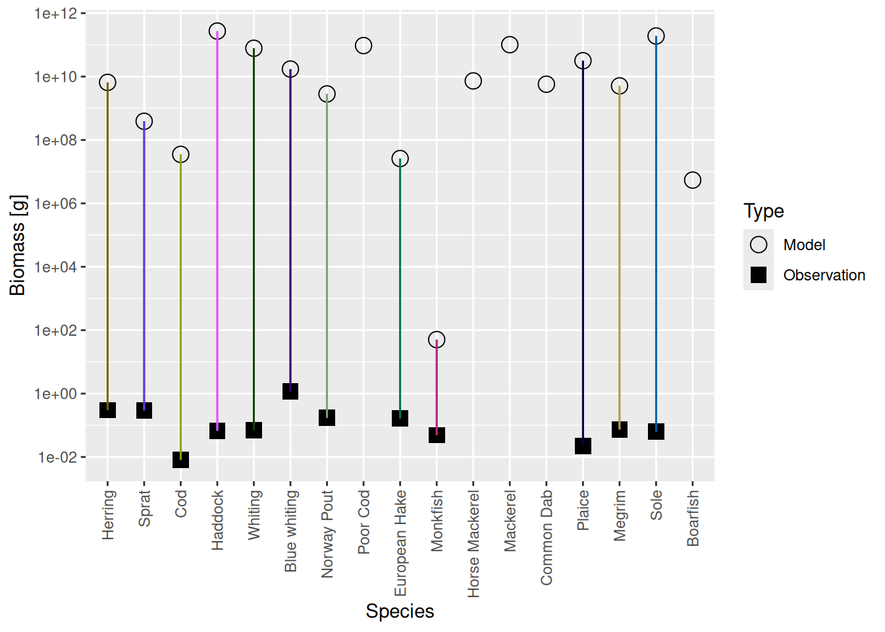
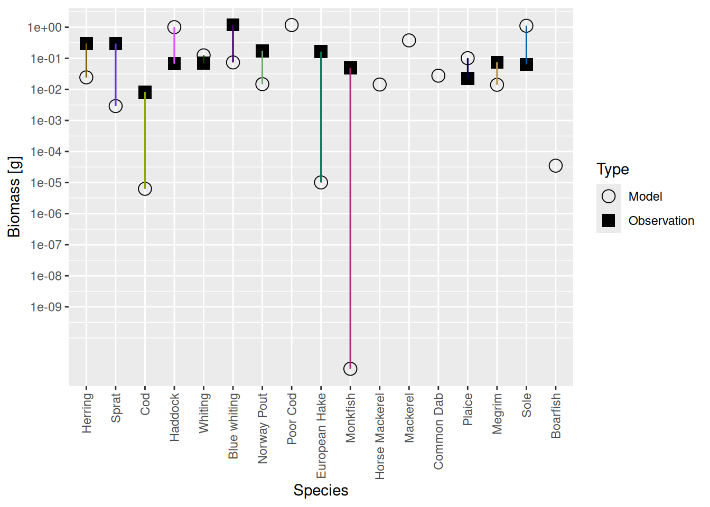
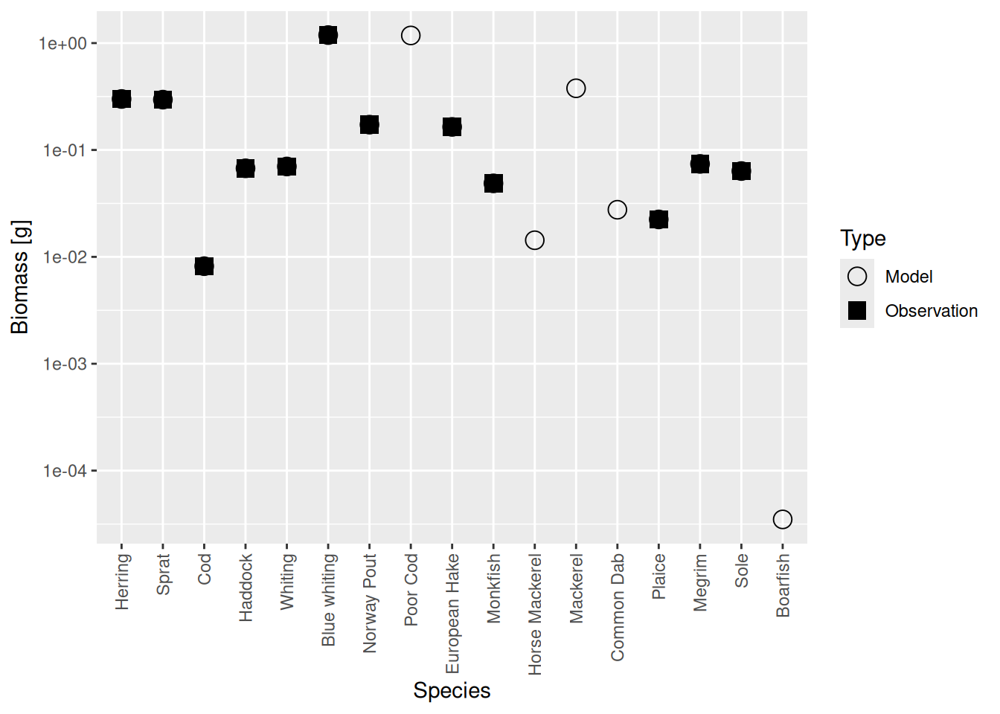
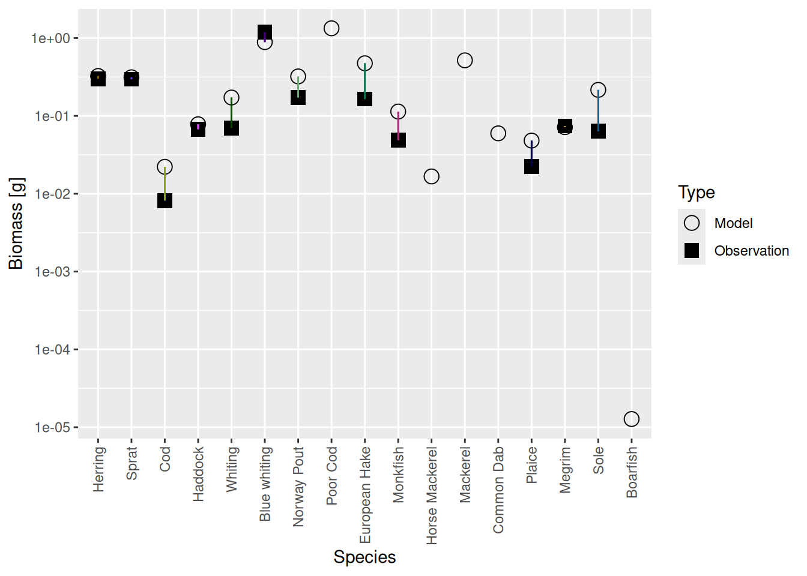
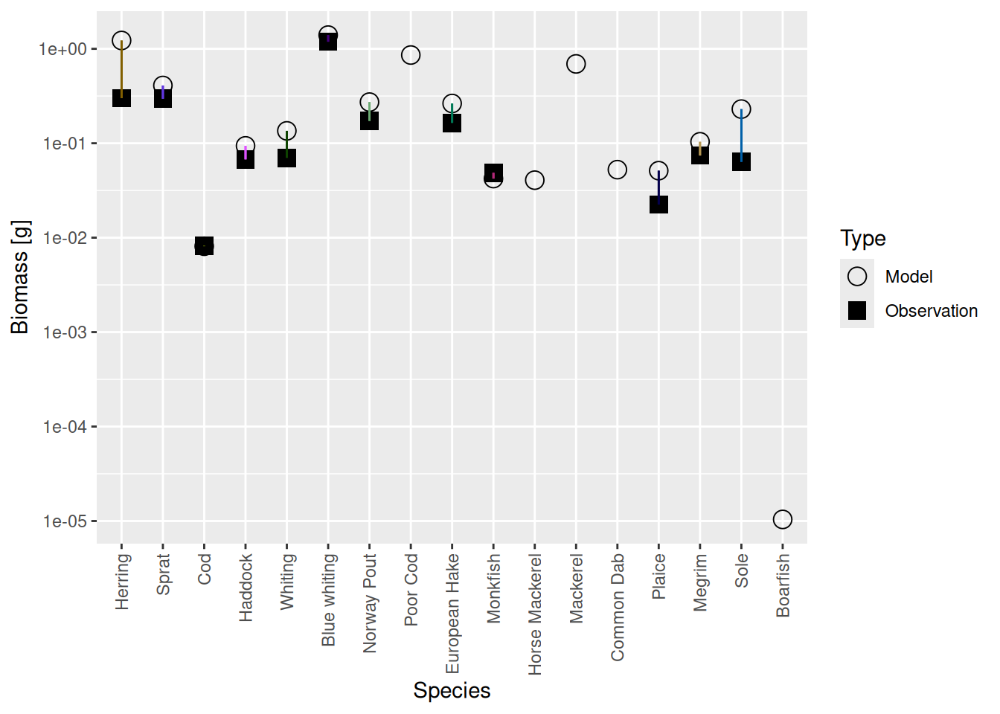
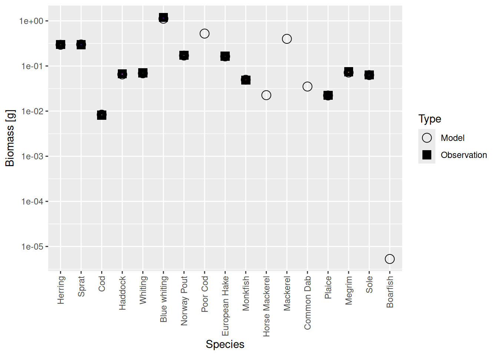

Create first model
Introduction
Setting up a mizer model that agrees with observations used to be really difficult. That is not a surprise, because we have seen how all the species influence each other, as well as the resource, and how the reproduction rates of all species depend on the size spectra of all species and vice versa. So if you make changes in one corner of the model to make it agree with some observation, things change at another corner to mess things up again.
There are three dynamic processes in action in a mizer model at the same time: size-spectrum dynamics, reproduction dynamics and resource dynamics. These are fully interacting with each other, with feedback loops. So for example the resource spectrum depends on the consumption by fish, which depends on the fish size spectra, which depend on the fish growth rates, which depends on the resource spectrum. Similarly the reproduction rate depends on the number of mature fish and on their energy income, which depends among other things on the rate at which new individuals are recruited, which depends among other things on the reproduction rate. And all of these feedbacks depend on the model parameters that we are supposed to choose in a way that reproduces observed behaviour. It seems hopeless!
The way we have arrived at a simple process for the creation of a viable mizer model is to decouple the tuning of the size spectrum dynamics from the tuning of the reproduction dynamics and resource dynamics. So, initially we turn off reproduction dynamics and resource dynamics. We set the constant reproduction rate to a level that produces the observed biomasses and we set the constant resource spectrum according to observations or, in the absence of observations, we set it to a Sheldon power law. We then use the size spectrum dynamics on its own. The size spectrum usually quickly settles down to its steady state, so that we can interactively tune parameters to get the steady state to agree with observations.
Once we are happy with the steady state of the model, we turn the reproduction and resource dynamics back on, but with parameter choices that do not modify the steady state of the size spectra in a now coupled system. We then have to tune the remaining parameters of the reproduction dynamics and resource dynamics to achieve the correct sensitivity of the system to perturbations away from its steady state. By separating tuning of the dynamics from the tuning of the steady state, the whole process becomes much more manageable.
We will concentrate on building models with the correct steady state for the next few tutorials and only later turn to tuning the behaviour away from steady state.
In this tutorial we will take the species parameters that we assembled in the previous tutorial and use the newMultispeciesParams() function to build a mizer model with them. We will let mizer choose most of the defaults and then adjust a few things so that the model has a steady state that has the observed species biomasses and growth rates. We will then do the fine-tuning in the following tutorials.
Now the creation of the mizer model is an 8-step process.
Step 0: Collect parameters
We did this in the previous tutorial. We now have a species parameter data frame, a species interaction matrix (optional) and a gear paramter data frame. So here we only need to read in those files.
When you repeat this work in RStudio, you can check that the data was read in correctly by clicking on celtic_species_params, celtic_gear_params and celtic_interaction in the “Environment” tab. That will open the data frames in your editor window for you to inspect. If you do not have the data files yet, the commands for downloading them were contained in the previous tutorial.
Step 1: Create MizerParams object
We will now set up a multi-species mizer model using the function newMultispeciesParams(). Besides the species parameters, the gear parameters and the interaction matrix, the other information that flows into a multi-species model are the resource parameters, the allometric exponents n and p and the fishing effort.
We let mizer choose defaults for the resource parameters. By default, the resource carrying capacity will be set to a power law N_R(w) = \kappa w^{-\lambda} with \lambda = 2.05, as we are already familiar with from Part 1 of the course.
We have previously discussed that our choice for the allometric exponents n (growth exponent) and p (metabolic exponent) is to take them both equal to 3/4. By default these exponents in multi-species models are set to different values, so we will overwrite the defaults in our newMultispeciesParams() command.
With this information we call the function newMultispeciesParams() which returns a MizerParams object that we save in the variable cel_model (lazy shorthand for “Celtic Sea model”):
cel_model <- newMultispeciesParams(species_params = celtic_species_params,
gear_params = celtic_gear_params,
interaction = celtic_interaction,
initial_effort = 1,
lambda = 2.05, n = 3/4, p = 3/4)No h provided for some species, so using age at maturity to calculate it.
No ks column so calculating from critical feeding level.
Using z0 = z0pre * w_inf ^ z0exp for missing z0 values.
Using f0, h, lambda, kappa and the predation kernel to calculate gamma.The messages tell you that the newMultispeciesParams() function has made choices for some species parameters based on the information we supplied.
In order to always know what a mizer model is about, it is a good idea to give it some metadata. This is of course optional.
cel_model <-
setMetadata(cel_model,
title = "Celtic Sea model from mizer course in Nov 2022",
description = "See https://mizer.course.sizespectrum.org/build")You can get that metadata back later with getMetadata().
Step 2: Project to steady state
The newMultispeciesParams() function does not currently put much effort into choosing a good initial community configuration. Let’s have a look at what it has set up:
plotlySpectra(cel_model, power = 2)There is a lot wrong here. The species spectra lack the characteristic bulge at adult sizes. Also the species spectra do not line up nicely with the abundance of the resource. But most importantly, these spectra are not close to their steady state values.
We will now project to the steady state, which will finally give us realistic species spectra. To do this we use the function steady() that implements our trick of keeping the reproduction rate and the resource spectrum constant while running the size-spectrum dynamics until the system has settled down in its steady state.
cel_model2 <- steady(cel_model)Convergence was achieved in 70.5 years.Warning in setBevertonHolt.MizerParams(params, reproduction_level = old_reproduction_level): The following species require an unrealistic value greater than 1 for `erepro`: BoarfishWe can ignore the warning about unrealistic reproductive efficiencies. Those warnings are an artefact of how the reproduction level is set by default. We could fix those defaults, but we are not yet concerned with the reproduction dynamics so we don’t have to do that and just ignore the warnings.
Now let us look at the spectra in the steady state:
plotlySpectra(cel_model2, power = 2)They look a lot more like species size spectra should look like, although there are still clearly some oddities, like the very low abundance of Monkfish among others.
The steady() function is not guaranteed to find the steady state. By default it stops after running the dynamics for a maximum of 99 years. If it warns you that it has not reached a steady state, then you should first try to run it again to see if within the next 99 years it reaches steay state. But if that still does not help, it may be that the steady state is actually unstable. In that case the system evolves towards an oscillating state instead. Luckily, this is rare for realistic parameters, but may well happen while you are still trying to find the correct parameters. If you encounter this phenomenon with your parameter choices, please let us know in the comments. We can then use your example to discuss the solution.
Step 3: Calibrate the model scale
Mizer is agnostic of whether you want to measure biomass per square meter, or per square kilometer, or for the entire area of the fishery or whatever. So initially it had set things up on an arbitrarily chosen scale. We can see this if we compare the biomasses of the species in the model with the observed biomasses from your species parameter file with the plotBiomassVsSpecies() function:
plotBiomassVsSpecies(cel_model2)
This shows for each species the model biomass (open circle) and the observed biomass (filled square, if available) on a logarithmic y-axis. The line connecting model value and observed value is for visual purposes only. We see that model values and observed values are many orders of magnitude apart.
Using your supplied biomass observations, mizer can now change the scale of our model so that the total biomass in the model coincides with the total observed biomass, summed over all species.
cel_model3 <- calibrateBiomass(cel_model2)Of course for the individual species the model biomasses will still disagree with the observed biomasses, with some being too high while others are too low. Just the total summed over all species agrees between model and observation.
plotBiomassVsSpecies(cel_model3)
We see that the biomasses of Monkfish, European Hake and Cod are far too low in the model, as was already apparent from the size spectrum plot. So we should fix this in the next step.
Step 4: Match biomasses
To fix the discrepancy between the model biomasses and the observed biomasses we simply need to rescale the reproduction rate of each species by the appropriate factor. The matchBiomasses() function does this for us.
cel_model4 <- matchBiomasses(cel_model3)
plotBiomassVsSpecies(cel_model4)
Now the circles and squares lie exactly on top of each other. This is expected, because we simply changed the relative biomasses of species in the model. The size spectrum plot also look more healthy now.
plotlySpectra(cel_model4, power = 2)There are similar functions matchNumbers() and matchYields() that you would use in case either total numbers of individuals or fisheries yields are known instead of total biomasses.
Step 5: Project to steady state
After we have rescaled the spectra of the individual species to reproduce the observed biomasses, the system is no longer in a steady state. All species now experience a new prey distribution and a new predator distribution and so their growth and death rates have changed, which requires us to run the dynamics again to find the new steady state:
cel_model5 <- steady(cel_model4)Of course running to steady state has now messed up our biomasses again:
plotBiomassVsSpecies(cel_model5)
Luckily the discrepancies are now much smaller than they were before. Before we deal with that, there is another issue we need to attend to in the next step.
It may be that the change in biomasses needed is so great that the system has difficulties finding its steady state again after calling matchBiomasses(). In that case you may want to try to not adjust all species in one go. You can use the species argument to matchBiomasses() to only adjust a subset of species, then call steady() then adjust the rest and then call steady() again.
Step 6: Calibrate growth
The growth rates in the model are not quite right yet. We can see that by calculating the age at which the fish in the steady state of the model would reach maturity size, using the age_mat() function, and comparing it to the observed age at maturity in the real world that we extracted from FishBase in the previous tutorial and saved in the species parameters.
age_mat_model = age_mat(cel_model5)
age_mat_observed = celtic_species_params$age_mat
data.frame(age_mat_model, age_mat_observed)We can fix that with the matchGrowth() function which rescales the search volume, the maximum consumption rate and the metabolic rate all by the appropriate factor while keeping the feeding level and the critical feeding level unchanged.
cel_model6 <- matchGrowth(cel_model5)Warning in setBevertonHolt.MizerParams(params): For the following species `erepro` has been increased to the smallest possible value: erepro[Cod] = 0.00121; erepro[European Hake] = 0.0137; erepro[Monkfish] = 7.65e-05age_mat_model = age_mat(cel_model6)
data.frame(age_mat_model, age_mat_observed)Step 7: Project to steady state
Now that we have corrected the growth rates, the system is of course again out of its steady state. So again we run the dynamics until the system has settled into its new steady state.
cel_model7 <- steady(cel_model6)
plotlySpectra(cel_model7, power = 2, total = TRUE)You see a pattern emerging. Whenever we have made a change to the system we have to run the dynamics with the steady() function to get to the new steady state.
Step 8: Rinse and repeat
Running to steady state has again messed up our biomasses:
plotBiomassVsSpecies(cel_model7)
And it has also slightly messed up our growth rates:
age_mat_model = age_mat(cel_model7)
data.frame(age_mat_model, age_mat_observed)We appear to be in a bind: If we match the biomasses and growth rates we are no longer at steady state, if we run to steady state we no longer match the biomasses and growth rates. But notice that the discrepancies are not as big as previously. So we don’t give up but simply keep iterating.
cel_model8 <- cel_model7 |>
calibrateBiomass() |> matchBiomasses() |> matchGrowth() |> steady() |>
calibrateBiomass() |> matchBiomasses() |> matchGrowth() |> steady() (There are possible variations of this. You could leave out the calibrateBiomass() steps. You could insert an additional steady() step between matchBiomasses() and matchGrowth(). Some variants may converge faster than others, but it really makes no practical difference because this is so fast anyway. ) It turns out that in this example iterating twice more was enough. Even in the steady state the biomasses are now spot on:
plotBiomassVsSpecies(cel_model8)
And the growth rates too are matched much more precisely than really necessary:
age_mat_model = age_mat(cel_model8)
data.frame(age_mat_model, age_mat_observed)We can now save the resulting model to disk for future use.
saveParams(cel_model8, "cel_model.rds")Of course there are still things wrong with this model. We will improve the model in the next two tutorials. But I want to stress that building a multi-species model where all the species coexist at the observed abundances and grow at the observed growth rates is no mean feat. In the past it took a lot of work to get to this stage.
Exercise
Go through the 8 steps that we went through above to build your own mizer model based on your own species parameters.
There are ways how the above method can fail. If that happens, there are various ways to rescue the situation. But rather than discussing such eventualities in the abstract, we will wait to see if you run into concrete difficulties. If you do, please save your code and email gustav.delius@gmail.com. We will then use your example to discuss the solutions.
When you are done, save your model with the saveParams() function for future use.
Summary
We have gone through the 8-step process of building a mizer model from your species parameters and your interaction matrix. The 8 steps were:
Create a MizerParams object with
newMultispeciesParams().Find a coexistence steady state with
steady().Set the scale of the model to agree with the observed total biomass with
calibrateBiomass(). This does not spoil the steady state.Use
matchBiomass()to move the size spectra of the species up or down to match the observed biomasses. This will spoil the steady state.Project back to steady state with
steady().Use
matchGrowth()to adjust the physiological rates so that the species reach their maturity size at maturity age.Project back to steady state with
steady().Iterate steps 4 through 7 as often as you like to get the steady-state biomasses to agree as precisely with your observations as you like.